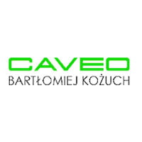
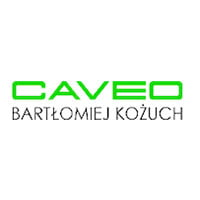

Co mogę dla Ciebie dziś zrobić?
Jeśli uważasz, że masz interesujący produkt lub usługę, zgodne z charakterem bloga, nie zwlekaj, napisz!
Formy współpracy
Reklama Twojego produktu
- sesja produktowa w niecodziennych sceneriach odwiedzanych przeze mnie miejsc
- post sponsorowany na blogu/ social mediach
- krótkie formy filmowe do promocji w social media
Promocja miejsc i regionów
- współpraca z hotelami, restauracjami, organizacjami turystycznymi
- post na blogu/ w social mediach promujący miejsce/hotel itp.
- sesja zdjęciowa – fotografia wnętrz, architektury, krajobrazowa, produktowa
Copy & SEO
- testy i recenzje: sprzęt fotograficzny, akcesoria foto i podróżnicze, inne elektroniczne gadżety lub podróżnicze produkty? W mojej walizce znajdzie się na nie miejsce. Masz produkt, który warto przetestować?
- autorskie teksty do magazynów lub na stronę
Zróbmy razem coś kreatywnego!
Jestem otwarta na różne formy współpracy, które luźno łączą się z podróżowaniem i fotografią.
Pokażę Twój produkt lub usługę w niebanalny sposób, napiszę rzetelną relację z wyjazdu, pobytu w hotelu, atrakcji regionu, przetestuję sprzęt, mogę też być ambasadorem Twojej marki. Do każdej współpracy podchodzę indywidualnie. Cenię sobie współpracę typu win-win, gdzie każda ze stron (Ty, Ja, Czytelnik) jest usatysfakcjonowana.
Jeśli uważasz, że masz ciekawy produkt czy usługę, które wpisują się w charakter bloga, to zapraszam do kontaktu:
hello@myownphotostory.plWybrane marki z którymi współpracowałam
 
